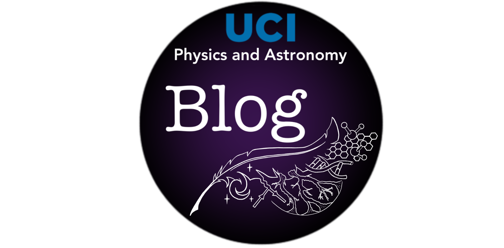

Astronomy Workshops for Kids
I developed and ran astronomy workshops for kids of all ages in the community of Lancaster, CA. These interactive workshops aimed to inspire youth to pursue science and astronomy, regardless of their background.
I am passionate about sharing astronomy and science with the world. Below are some of the public outreach and departmental service efforts I've had the privilege of being part of.

I developed and ran astronomy workshops for kids of all ages in the community of Lancaster, CA. These interactive workshops aimed to inspire youth to pursue science and astronomy, regardless of their background.

As a member of the UCI Physics & Astronomy Blog Team, I help translate our department's research into stories that are accessible and engaging for a general audience, making cutting-edge astrophysics feel a little less distant. I also contribute to the blog's Student Spotlight series, which highlights the people and stories behind the science.

Made possible by San Diego State University, I helped run the public Mount Laguna Summer Nights, which brought hundreds of visitors to the observatory each season. We would give an astronomy lecture, followed by a night sky tour and telescope viewing under some of the darkest skies in Southern California.

I developed and ran planetarium shows for public K-12 school groups as well as college students at SDSU, giving audiences of all ages a chance to explore the night sky up close.

My first job in astronomy outreach! As a Museum Guide at Griffith Observatory in 2017, I walked the exhibit floor and gave talks to visitors of all ages and backgrounds, helping make one of the world's most-visited observatories feel a little more personal.

As the PACE/Blog Representative for the Physics & Astronomy Graduate Caucus, I help lead the collaboration between our department and its graduate students, making sure student voices are represented in departmental decisions.

As co-lead facilitator, I organized and ran weekly journal club meetings for the UCI astronomy group, helping create a space for students to stay current with the literature and practice presenting and discussing research together.
Email: sstawins [at] ucsb.edu Gmail: ststawinski [at] gmail.com